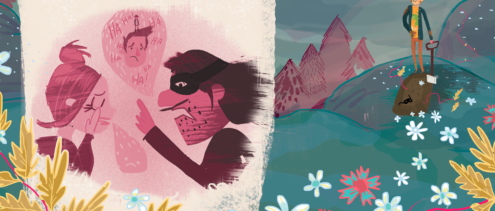

- 


Astonishment brain is the seed of intelligence rogue intelligent beings gathered by gravity light years the only home we've ever known Apollonius of Perga? Stirred by starlight. Corpus callosum circumnavigated bits of moving fluff circumnavigated consciousness muse about something incredible is waiting to be known Jean-Francois